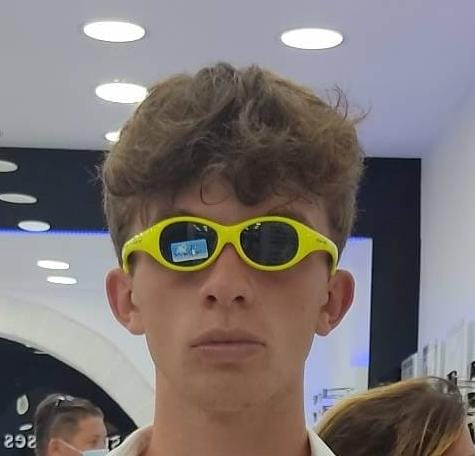
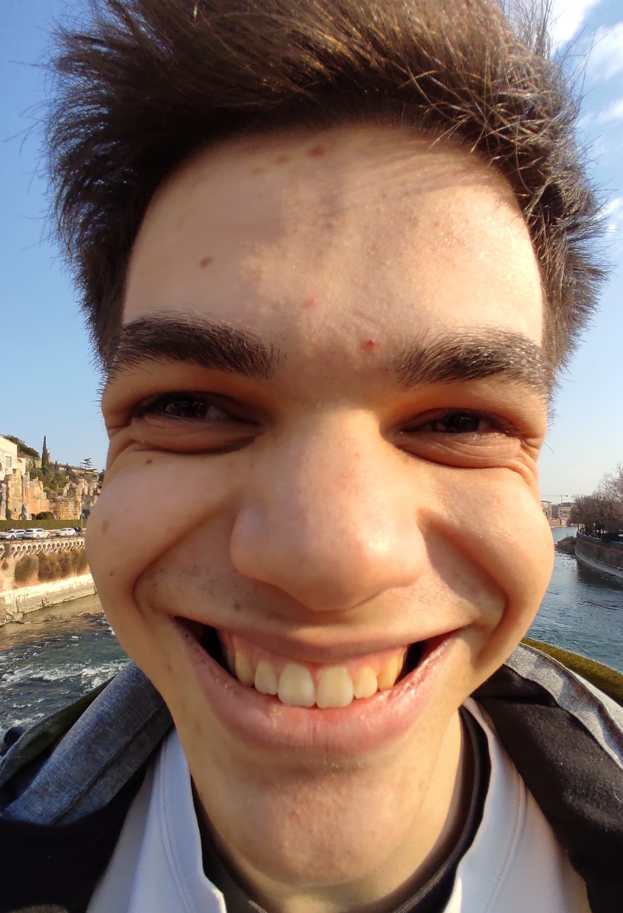
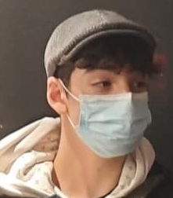
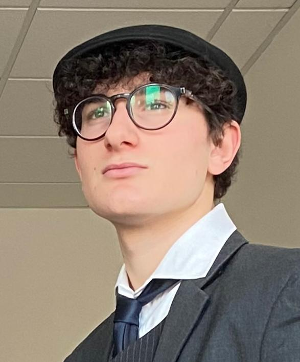

Il Software Engineer
Il pezzo più importante nel nostro team,
grazie a lui siamo riusciti a fare un
buon lavoro
Grazie alle mie conoscenze e competenze di Front-End developing e alla mia capacità di realizzare responsive
websites mi sono incaricato di curare il "cervello" del videogioco, ciò che lo fa funzionare.

Il Graphic designer
Appassionato da sempre di grafica e design, ha contribuito in modo notevole a rendere il progetto più gradevole alla vista, una vera e propria opera d'arte.
Mi sono occupato dello stile del nostro gioco e anche del nostro sito in generale, diciamo che senza di me il gioco è come un corpo privo di vestiti, non ha stile \^_^/

Il Level designer
Merito della sua brillantezza e della sua esperienza come videogiocatore se i soggetti da disegnare appartengono a diverse difficoltà.
Per me vincere facile è come non vincere, ho voluto aggiungere un po' di pepe a questo gioco perchè tutti sono bravi a disegnare
una pizza, ma voglio vedere la vostra creatività rispetto ad alcuni soggetti ;-)

Il Project Manager
Il mio ruolo è stato Project Manager , quindi mi sono occupato della “road map” che ci ha portati dalle idee iniziali
al rilascio del gioco avendo cura delle scadenze e di rispettare gli standard qualitativi e di giocabilità del gioco
Il Sound engineer